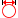

|  | Макс. диаметр отверстия |
Задание диапазона наибольшего диаметра для выбора в модели. При этом нет необходимости физического выбора элементов в модели.
Это удобно при точечном или центровочном сверлении, когда необходимо выбрать разные отверстия.
Совет. Точечное сверление и создание фаски. Выберите диапазон отверстий, которые необходимо включить. Укажите высоту снизу от ширины фаски и задайте значение ширины фаски.